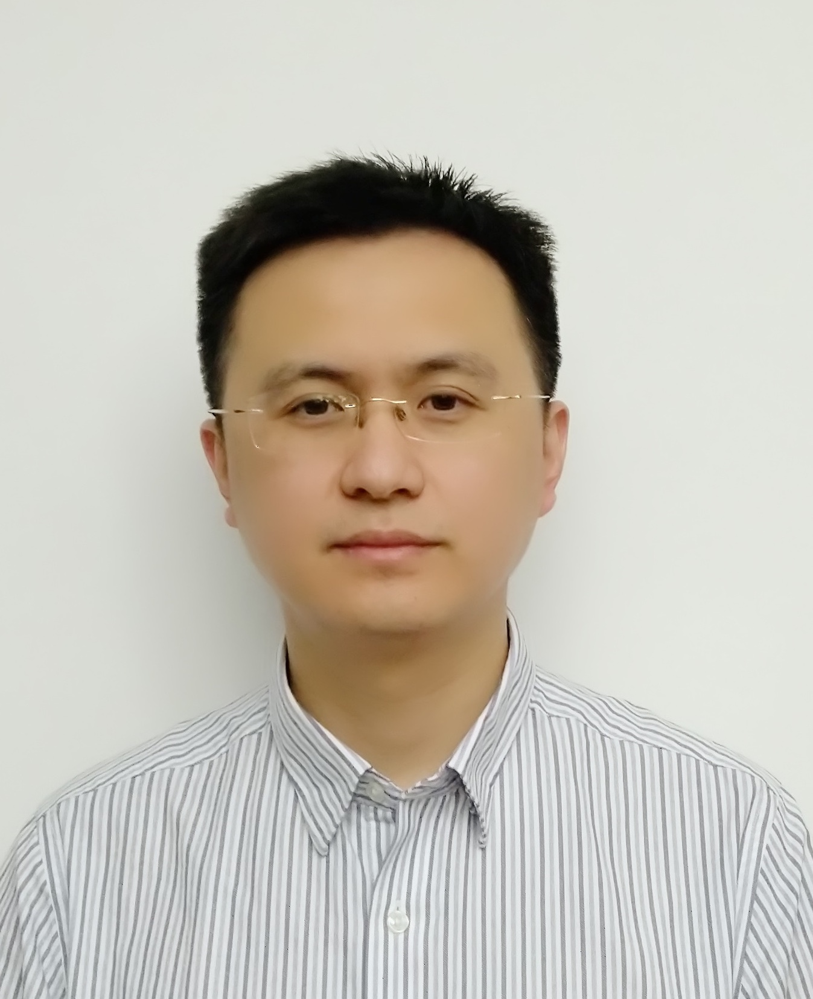

| 赵进 |  | |
|
Email: jzhao#fudan.edu.cn (replace # with @) Tel/Fax: +86-21-51355530 办公室：江湾校区二号交叉学科楼D4025 | ||
[ 简历 | 研究 | 论文 | 学术服务 | 教学 | 学生 | 奖励 | English ]
赵进于2001年毕业于南京邮电学院，获得计算机通信专业学士学位，2006年毕业于南京大学，获得计算机应用技术专业博士学位，目前是复旦大学教授，主要研究方向为计算机网络。
我的研究方向是计算机网络，主要包括如下内容
工作的详细介绍可以点击 这里.
- 软件定义网络
- 可编程数据平面
- 网络功能虚拟化
- 分布式机器学习
| 论文 |
最新论文s
论文的列表可以点击这里.
| 学术服务 |
学术组织
- CCF Senior Member
- IEEE Senior Member
- ACM Member
编委
- IEEE Transactions on Network and Service Management, AE, 2020-
技术委员会
- IEEE INFOCOM 2019,2020,2021, TPC
- IFIP Networking 2020,2021 TPC
- IEEE ICC 2020, TPC
- IEEE ICPADS 2019, TPC
- ADAMUS 2011, TPC
主席
- IEEE LANMAN 2020, Publicity Co-chair
- IEEE LANMAN 2013, Publicity Co-chair
审稿人
计算机网络领域的知名期刊和会议，包括ToN、ToC、INFOCOM等
For Prospective Students:
真诚欢迎有志于在新型计算机网络领域学习的学生加入我们的团队。如果您对我的研究方向感兴趣，有意寻求进一步合作意愿，欢迎和我取得联系，请发送Email并同时提供简历。 欢迎参考如下意见.
Last updated by Jin Zhao on 2021-07-15